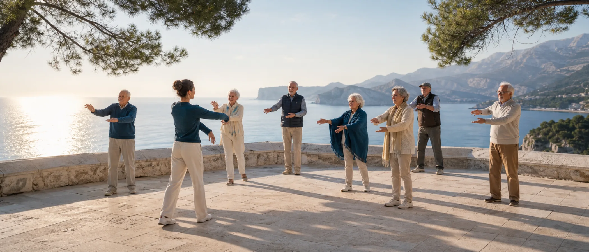
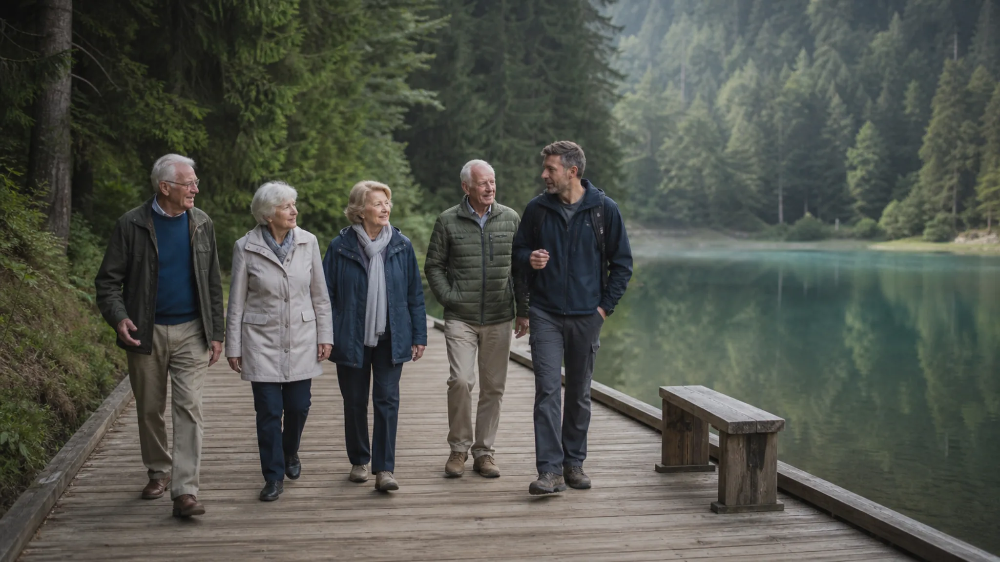

Gesundheit & Aktivität
Regelmäßige Bewegung im Freien gehört zum Kern des Programms: Morgengymnastik auf der Terrasse, Gleichgewichtsübungen und Spaziergänge auf ebenen Bergwegen. Wir passen die Belastung an jeden Bewohner an; eine Begleitkraft bleibt immer bei der Gruppe.

Im Haus
Täglich · im Freien
Die betreuten Einheiten richten sich nach Mobilität und Pflegebedarf. Sie umfassen sanfte Kräftigung, Dehnung und Atemübungen — im Winter später am Vormittag, im Sommer vor der Hitze.
Mehrmals wöchentlich · Partner-Spa
Unser Partner-Spa in Budva bietet Meerwasserbecken, Massagen und Physiotherapie. Ein Arzt empfiehlt die Anwendungen; wir organisieren Transfer und Begleitung.
Täglich · Garten & Promenade
In kleinen Gruppen üben die Bewohner Gleichgewicht, Koordination und Gedächtnis. Die Einheiten unterstützen die Sturzprävention; die Entwicklung fließt in den Bericht an die Partnereinrichtung ein.
Wege in Montenegro
Montenegro bietet ebene, gut gepflegte Wege in Berg- und Seenlandschaften. Wir prüfen jeden Weg nach Länge, Steigung, Rastmöglichkeiten und Erreichbarkeit mit dem Kleinbus.
| Weg | Region | Länge | Steigung | Geeignet für |
|---|---|---|---|---|
| Uferpromenade Budva–Bečići | Küste | 6 km | eben | für alle |
| Miločer-Pfad zum Sveti Stefan | Küste | 1,5 km | eben | für alle |
| Rundweg Biogradsko-See | Nationalpark Biogradska Gora | 3,4 km | eben | mit Begleitung |
| Rundweg Schwarzer See (Crno jezero) | Durmitor | 3,6 km | eben | mit Begleitung |
| Panoramaweg Vrmac | Bucht von Kotor | 4 km | sanft ansteigend | geübte Spaziergänger |
| Njegoš-Mausoleum am Lovćen | Nationalpark Lovćen | Bergstraße | 461 Stufen | nur der stufenfreie Aussichtspunkt |
Eine geschulte Begleitkraft bleibt bei jeder Gruppe. Rastplätze und Pausen planen wir vorab, der Kleinbus fährt bis zum Ausgangspunkt und die Begleitung trägt immer ein Erste-Hilfe-Set.

Verantwortung
Vor jeder Aktivität erkundigt sich eine Pflegefachkraft nach dem Befinden der Teilnehmer. Auf eine Begleitkraft kommen höchstens acht Bewohner. Im Sommer achten wir auf Trinkpausen und schattige Wege; ein Physiotherapeut beobachtet die individuelle Belastung.
Nächster Schritt
Wir erstellen eine Kalkulation, einen Aktivitätenplan passend zur Mobilität Ihrer Bewohner und Preise je Pflegegrad.
Angebot anfordern